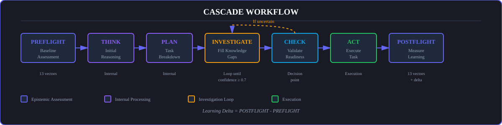
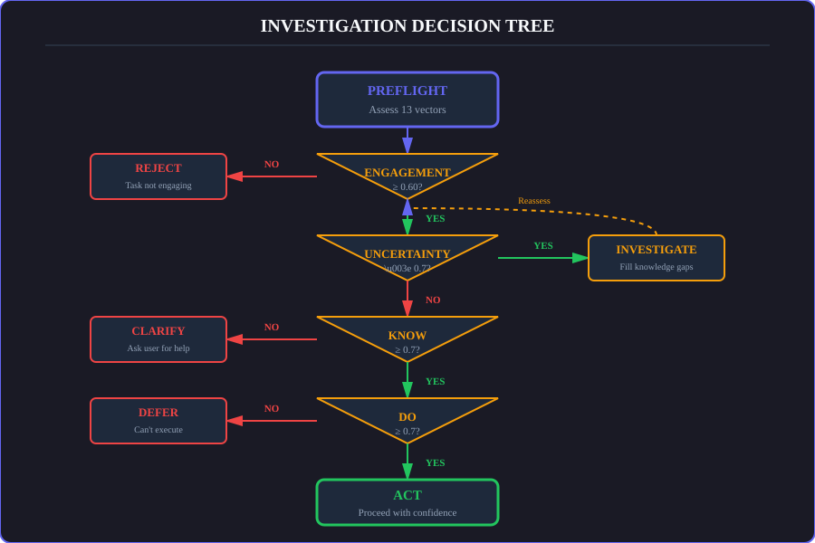

What is Epistemic Self-Assessment?
Epistemics is the study of knowledge—what we know, how we know it, and what we're uncertain about.
Think about how humans make decisions. When you're confident about something, you act decisively. When you're uncertain, you ask questions, do research, or seek advice. This natural self-awareness is what makes human judgment reliable.
Traditional AI vs Empirica
| Traditional AI Systems ❌ | Empirica's Approach ✅ |
|---|---|
| Overconfident - Claim certainty when uncertain | Genuine LLM-powered self-assessment - Real reasoning, not heuristics |
| Underconfident - Hesitate when capable | 13-vector epistemic measurement - Comprehensive knowledge state |
| Heuristic-based - Use keyword matching to fake self-awareness | Explicit uncertainty tracking - "Know what you don't know" |
| No uncertainty tracking - Can't distinguish "I know" from "I guess" | Calibrated confidence - Measure accuracy of self-assessment |
| Learning deltas - Track epistemic growth over time | |
| Each phase measures all 13 vectors. Learning deltas calculated automatically. |

7-phase epistemic reasoning: PREFLIGHT → THINK → PLAN → INVESTIGATE → CHECK → ACT → POSTFLIGHT
Decision logic for investigation loops based on epistemic vectorsCalibration: The Differentiator
CALIBRATION is measured only during POSTFLIGHT and compares predictions against reality. This is how we validate that the AI's self-assessment is accurate.
PREFLIGHT vs POSTFLIGHT comparison measures learning:
PREFLIGHT: KNOW: 0.35, UNCERTAINTY: 0.75
↓ [INVESTIGATE] ↓
POSTFLIGHT: KNOW: 0.90, UNCERTAINTY: 0.15
Result: +0.55 Knowledge Gain, -0.60 Uncertainty Reduction.
We measure Epistemic Delta across all 13 vectors, not just final confidence. This proves the AI actually learned something, rather than just claiming confidence.
Domain-specific calibration: The epistemic delta changes based on domain—more specific vectors for that domain are weighted higher. For example, in code analysis tasks, the CONTEXT and CHANGE vectors carry more weight, while in research tasks, KNOW and SIGNAL dominate.
Knowledge distillation: These calibration patterns are used to train smaller models. By analyzing which investigation strategies produce the best epistemic deltas, we can distill this knowledge into more efficient models that "know how to learn" in specific domains.
Calibration patterns reveal: - Pattern: This AI tends to underestimate slightly → can be more confident - Pattern: This AI overestimates in domain X → needs more investigation - Pattern: Investigation strategy Y is most effective for this AI
The 13 Epistemic Vectors
Empirica measures AI knowledge state across 13 dimensions, organized into 5 groups. Each vector provides a different lens on what the AI knows, can do, and is uncertain about.
Gate: ENGAGEMENT (≥0.60 required)
Purpose: Verify meaningful task understanding before beginning
Before an AI starts working, it needs to understand what's being asked. The ENGAGEMENT gate ensures the task is clear, relevant, and achievable:
- Clarity - Does the AI understand what's being asked?
- Relevance - Does the AI have relevant knowledge/capability?
- Readiness - Is the AI prepared to succeed?
Why it's a gate: - Low engagement (<0.60) means the task is unclear or mismatched - Prevents wasted effort on misunderstood problems - Forces clarification upfront
Example:
Task: "Do the thing"
ENGAGEMENT: 0.35 ❌ → CLARIFY (too vague)
Task: "Fix the SQL injection in the login form"
ENGAGEMENT: 0.85 ✅ → Proceed with assessment
🏗️ Foundation Vectors (35% weight)
Core knowledge and capability assessment
These three vectors form the foundation of epistemic awareness—what you know, what you can do, and where you are.
KNOW - Domain Knowledge
Understanding of relevant domain, concepts, and technologies.
High KNOW (0.8+): Deep domain understanding, familiar with tools and approaches, know context and implications.
Low KNOW (<0.5): Unfamiliar domain, missing critical knowledge, need external research.
DO - Execution Capability
Ability to execute required actions and technical capability.
High DO (0.8+): Have necessary tools/access, technical capability present, know implementation approach.
Low DO (<0.5): Missing required tools, lack technical capability, need user assistance.
CONTEXT - Environmental Awareness
Understanding of environment, current state, and constraints.
High CONTEXT (0.8+): Understand current environment, know system state, aware of constraints.
Low CONTEXT (<0.5): Don't understand environment, missing system state, unclear on constraints.
🧠 Comprehension Vectors (25% weight)
Task understanding and information quality
These vectors measure how well the AI understands the task and the quality of information it's working with.
CLARITY - Task Understanding
How clear and well-defined the request is.
High CLARITY (0.8+): Specific request, clear goals, defined success criteria.
Low CLARITY (<0.5): Vague request, unclear goals, ambiguous requirements.
Investigation Strategy: Ask user for clarification (highest priority, 0.40 gain).
COHERENCE - Logical Consistency
Internal logical consistency of request and approach.
High COHERENCE (0.8+): Request makes logical sense, no contradictions, approach is sound.
Low COHERENCE (<0.5): Contradictory requirements, logical issues, approach unclear.
Critical Threshold: <0.50 → RESET (task incoherent)
SIGNAL - Information Quality
Ratio of useful information to noise.
High SIGNAL (0.8+): Clear signal, relevant information, focused request.
Low SIGNAL (<0.5): Lost in noise, too much irrelevant info, hard to extract signal.
DENSITY - Complexity Management
Information load (inverted - HIGH is bad).
Low DENSITY (0.3-0.5) - GOOD: Manageable information load, right amount of detail.
High DENSITY (0.8+) - BAD: Information overload, overwhelming complexity, cognitive saturation.
Critical Threshold: >0.90 → RESET (cognitive overload)
⚡ Execution Vectors (25% weight)
Readiness and progress tracking
These vectors track the AI's ability to execute and monitor progress.
STATE - Current Readiness
Understanding of current state.
High STATE (0.8+): Clear picture of current state, know what exists, see starting point.
Low STATE (<0.5): Unclear current state, don't know what exists, can't see starting point.
CHANGE - Progress Tracking
Ability to track and manage changes.
High CHANGE (0.8+): Can track progress, monitor evolution, detect regressions.
Low CHANGE (<0.5): Can't track changes, no change visibility, can't detect issues.
Critical Threshold: <0.50 → STOP (cannot progress)
COMPLETION - Goal Proximity
Visibility of path to completion.
High COMPLETION (0.8+): Clear path to done, know the steps, success criteria clear.
Low COMPLETION (<0.5): Unclear path forward, don't know steps, success criteria vague.
IMPACT - Consequence Awareness
Ability to predict consequences.
High IMPACT (0.8+): Understand consequences, can predict effects, know risks.
Low IMPACT (<0.5): Can't predict consequences, unknown effects, risks unclear.
🔮 Meta-Epistemic: UNCERTAINTY
"What you don't know about what you don't know"
UNCERTAINTY is special—it's a meta-vector that tracks uncertainty about the assessment itself. This is what enables genuine epistemic humility.
Low UNCERTAINTY (<0.3) - GOOD: - Confident in assessment - Domain well-understood - Few unknowns
High UNCERTAINTY (0.7+) - INVESTIGATE: - Significant epistemic gaps - Domain beyond training data - Many unknowns present
Why it's different: - Tracks uncertainty ABOUT the 13-vector assessment itself - Enables PREFLIGHT vs POSTFLIGHT comparison - Validates investigation effectiveness
Example:
PREFLIGHT:
KNOW: 0.35 (low knowledge)
UNCERTAINTY: 0.75 (high uncertainty)
→ Action: INVESTIGATE
... investigation happens ...
POSTFLIGHT:
KNOW: 0.80 (knowledge increased +0.45)
UNCERTAINTY: 0.25 (uncertainty reduced -0.50)
→ Investigation was effective! ✅
Critical Thresholds
Safety rails to prevent unsafe operation. When vectors cross these thresholds, automated decisions are triggered:
| Threshold | Value | Consequence |
|---|---|---|
| ENGAGEMENT | < 0.60 | Stop (Clarify) |
| COHERENCE | < 0.50 | Reset (Incoherent) |
| DENSITY | > 0.90 | Reset (Overload) |
| CHANGE | < 0.50 | Stop (Cannot Progress) |
| UNCERTAINTY | > 0.80 | Investigate |
These thresholds ensure the AI never proceeds when it shouldn't, creating a reliable safety net.
Investigation Strategies
When vectors indicate gaps, Empirica recommends specific investigation strategies:
KNOW < 0.50 (low domain knowledge)
→ Strategy: External search (web, documentation)
CLARITY < 0.50 (unclear task)
→ Strategy: User clarification (HIGHEST PRIORITY)
CONTEXT < 0.50 (missing environment info)
→ Strategy: Environmental scanning (workspace, files)
UNCERTAINTY > 0.80 (high overall uncertainty)
→ Strategy: Comprehensive investigation required
UNCERTAINTY < 0.30 (low uncertainty)
→ Action: PROCEED with confidence
Each investigation strategy is tailored to the specific epistemic gap, making the process efficient and targeted.
Next Steps: - CASCADE Workflow - How vectors drive decisions - Cross-AI Collaboration - Shared epistemic state - AI vs Agent Patterns - When to use full assessment